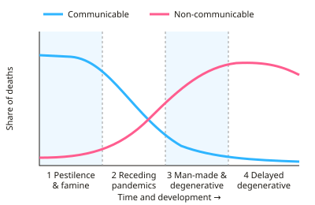

A-level Geography Year 13 · Topic 17
Disease dilemmas
Disease dilemmas explores how diseases spread, who they affect, and the difficult choices involved in fighting them.
We will classify diseases, explain their global patterns and spread, and examine their impacts on people and economies.
Then we look at global health inequalities, how diseases are managed, and case studies such as malaria, Ebola and COVID-19.
- 6 subtopics
- 267 questions
- Free: 17.1 notes and 10 questions
In this topic
- 17.1Disease classification and global patterns: communicable and non-communicable, epidemiological transitionFree below · 37 questions
- 17.2Causes and spread of disease: vectors, environment, diffusion and globalisationOpen in Full Marks · 30 questions
- 17.3Impacts of disease on people, economies and developmentOpen in Full Marks · 67 questions
- 17.4Health, development and global health inequalities: healthcare access, WHO and global health goalsOpen in Full Marks · 72 questions
- 17.5Managing disease: prevention, vaccination, treatment and surveillanceOpen in Full Marks · 31 questions
- 17.6Disease dilemmas case studies: ethical, economic and political choices (e.g. malaria, Ebola, COVID-19)Open in Full Marks · 30 questions
17.1 · Free notes
Disease classification and global patterns: communicable and non-communicable, epidemiological transition

Key points
- Communicable (infectious) diseases are caused by pathogens (bacteria, viruses, protozoa, fungi). They pass between hosts directly or via vectors, water, food or air. Examples are malaria, TB, HIV/AIDS, cholera and COVID-19.
- Non-communicable diseases (NCDs) are not passed between people and are usually chronic. They are linked to genetics, ageing, lifestyle (diet, tobacco, alcohol, inactivity) and environment. The main types are cardiovascular disease, cancers, chronic respiratory disease and diabetes.
- Globally NCDs cause about 74% of deaths (c. 41 million a year, WHO). More than three-quarters of these occur in low- and middle-income countries, so NCDs are not just a rich-world problem.
- Know the key terms. Endemic means constantly present in an area. Epidemic means a sudden rise above the expected level in a region. Pandemic means an epidemic across several continents. Incidence is new cases per time period and prevalence is total cases at a time. Morbidity is illness and mortality is death.
- DALY (disability-adjusted life year) = years of life lost to early death + years lived with disability, so it allows burdens to be compared. Mortality rate = deaths ÷ population × 100,000. Prevalence (%) = cases ÷ population × 100.
- Omran's epidemiological transition (1971) links disease patterns to development. Stage 1 is pestilence and famine. Stage 2 is receding pandemics. Stage 3 is degenerative and man-made diseases. Stage 4 is delayed degenerative diseases (an age of obesity and inactivity has since been added).
- The transition runs alongside the demographic transition. Better sanitation, nutrition, vaccines and healthcare cut infectious deaths and raise life expectancy. The ageing population then shifts the burden to NCDs.
- Low-income countries, especially Sub-Saharan Africa, carry the highest communicable burden. About 94% of malaria cases and 95% of malaria deaths are in the WHO African region (2023), and roughly two-thirds of people with HIV live in Africa. High-income countries are dominated by cardiovascular disease, cancers and dementia.
- Many middle-income countries (e.g. India, Brazil, South Africa) face a double burden of communicable disease and NCDs. Urbanisation and diet change arrive before infectious disease is controlled.
- Evaluate the model. It is based on Western experience and assumes a one-way path. It did not predict emerging and re-emerging infections (HIV, Ebola, COVID-19) or antimicrobial resistance, which can partly reverse the transition.
- Data are limited. Weak health systems mean under-diagnosis and under-reporting in low-income countries, so global maps rely on WHO estimates. Cause-of-death records are far more complete in high-income countries.
In more detail
- Types: communicable (infectious, such as malaria and COVID-19) and non-communicable (such as heart disease, cancer and diabetes).
- Scale of NCDs: non-communicable diseases cause about 74% of all deaths worldwide.
- Malaria: about 263 million cases and 597 000 deaths in 2023, about 95% of them in Africa.
- Epidemiological transition: as countries develop, the main causes of death shift from infectious diseases to non-communicable ones.
- Terms: endemic (always present), epidemic (a sudden rise in one area) and pandemic (spreading worldwide).
Practice
Disease classification and global patterns: communicable and non-communicable, epidemiological transition: 10 questions
Pick an answer to check it, or open the answer for the explanation.
1. Which of the following is a non-communicable disease?
- Tuberculosis
- Cholera
- Type 2 diabetes
- Dengue fever
Show answer
C: Type 2 diabetes. Type 2 diabetes is chronic and not caused by a transmissible pathogen. Cholera, TB and dengue are all infectious (communicable) diseases.
2. According to WHO, approximately what share of all global deaths is caused by non-communicable diseases?
- About 50%
- About 25%
- About 95%
- About 74%
Show answer
D: About 74%. NCDs cause roughly 41 million deaths a year, about 74% of the global total, and most of these occur in low- and middle-income countries.
3. A country has 20 million people and 12,000 malaria deaths in a year. What is the malaria mortality rate?
- 6 per 100,000
- 60 per 100,000
- 600 per 100,000
- 1,667 per 100,000
Show answer
B: 60 per 100,000. 12,000 ÷ 20,000,000 = 0.0006. Multiplying by 100,000 gives 60 deaths per 100,000 people.
4. A region has 9 million people, of whom 450,000 are living with HIV. What is the HIV prevalence?
- 0.5%
- 2%
- 5%
- 50%
Show answer
C: 5%. Prevalence = total cases ÷ population × 100 = 450,000 ÷ 9,000,000 × 100 = 5%.
5. Which statement correctly distinguishes an epidemic from a pandemic?
- An epidemic is always present; a pandemic is seasonal
- An epidemic is a sudden rise above normal in a region; a pandemic spans continents
- A pandemic is limited to one country; an epidemic spans continents
- An epidemic is always fatal; a pandemic never is
Show answer
B: An epidemic is a sudden rise above normal in a region; a pandemic spans continents. An epidemic is an unexpected rise in cases in a region. A pandemic is an epidemic spread across several continents, as with COVID-19 in 2020.
6. A country has life expectancy of 56 and most deaths from diarrhoeal disease, TB and malaria, while heart disease is rising in its cities. This shows...
- Complete control of infections
- Stage 4 of the epidemiological transition
- A double burden of disease
- A fall in urbanisation
Show answer
C: A double burden of disease. Infectious disease is still dominant while NCDs are rising with urbanisation and diet change. This is a double burden, typical of middle-income and transitioning countries.
7. Country X: 70% of deaths are NCDs, life expectancy 81. Country Y: 65% communicable, life expectancy 56. Which statement is supported?
- Y is at an earlier stage of epidemiological transition than X
- X has a higher risk from infectious disease than Y
- Y has an older population than X
- X is less developed than Y
Show answer
A: Y is at an earlier stage of epidemiological transition than X. Y's infectious-disease dominance and low life expectancy indicate Stage 1–2. X's NCD dominance and high life expectancy indicate Stage 3–4.
8. Which is the best explanation for rising NCD rates in many low-income countries?
- Increased malaria transmission
- Urbanisation, diet change, tobacco use and ageing
- Fewer people being vaccinated
- Falling life expectancy
Show answer
B: Urbanisation, diet change, tobacco use and ageing. Urban lifestyles, processed food, tobacco marketing and longer lives raise heart disease, diabetes and cancer. Falling malaria or vaccination rates do not explain this.
9. What does a DALY measure?
- Deaths per 100,000 people
- Years of life lost to early death plus years lived with disability
- Annual health spending per person
- Average age at death
Show answer
B: Years of life lost to early death plus years lived with disability. A disability-adjusted life year combines years of life lost (YLL) and years lived with disability (YLD), giving a single measure of disease burden.
10. Which is a valid criticism of Omran's epidemiological transition model?
- It ignores the fall in infectious disease
- It assumes one path and did not predict emerging infections or AMR
- It only applies to low-income countries
- It cannot explain ageing populations
Show answer
B: It assumes one path and did not predict emerging infections or AMR. The model is based on Western experience and a one-way shift. New or resistant infections such as HIV, COVID-19 and AMR can reverse or complicate the pattern.
Keep going in Full Marks
Full Marks has 37 questions on Disease classification and global patterns: communicable and non-communicable, epidemiological transition (27 more than here), set out in practice levels. You also get notes and 3D models for all 6 subtopics of Disease dilemmas, plus games, timed exams and past papers.
On your exam board
- AQATopic 5: Population and the environment
- OCR ATopic 3.2: Geographical debates: disease dilemmas
- EdexcelTopic 9A: Global development and connections: health, human rights and intervention
Not in the Cambridge specification.